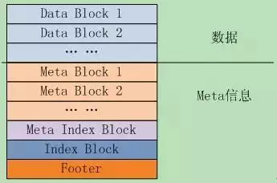
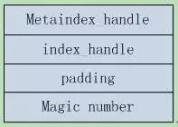
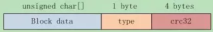
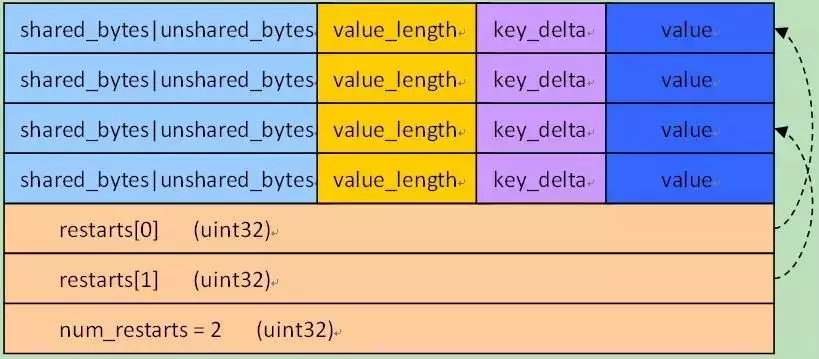

leveldb源码分析7
本系列《leveldb源码分析》共有22篇文章，这是第七篇。
6. SSTable之一
SSTable是Leveldb的核心之一，是表数据最终在磁盘上的物理存储。也是体量比较大的模块。
6.1 SSTable的文件组织
作者在文档doc/table_format.txt中描述了表的逻辑结构，如图6.1-1所示。逻辑上可分为两大块，数据存储区Data Block，以及各种Meta信息。
文件中的k/v对是有序存储的，并且被划分到连续排列的Data Block里面，这些Data Block从文件头开始顺序存储，Data Block的存储格式代码在block_builder.cc中；
紧跟在Data Block之后的是Meta Block，其格式代码也在block_builder.cc中；Meta Block存储的是Filter信息，比如Bloom过滤器，用于快速定位key是否在data block中。
MetaIndex Block是对Meta Block的索引，它只有一条记录，key是meta index的名字（也就是Filter的名字），value为指向meta index的BlockHandle；BlockHandle是一个结构体，成员offset是Block在文件中的偏移，成员size是block的大小；
Index block是对Data Block的索引，对于其中的每个记录，其key >=Data Block最后一条记录的key，同时<其后Data Block的第一条记录的key；value是指向data index的BlockHandle；

Footer，文件的最后，大小固定，其格式如图6.1-2所示。

成员metaindex_handle指出了meta index block的起始位置和大小；
- 成员index_handle指出了index block的起始地址和大小；
这两个字段都是BlockHandle对象，可以理解为索引的索引，通过Footer可以直接定位到metaindex和index block。再后面是一个填充区和魔数（0xdb4775248b80fb57）。
6.2 Block存储格式
6.2.1 Block的逻辑存储
Data Block是具体的k/v数据对存储区域，此外还有存储meta的metaIndex Block，存储data block索引信息的Index Block等等，他们都是以Block的方式存储的。来看看Block是如何组织的。每个Block有三部分构成：block data, type, crc32，如图6.2-1所示。

类型type指明使用的是哪种压缩方式，当前支持none和snappy压缩。
虽然block有好几种，但是Block Data都是有序的k/v对，因此写入、读取BlockData的接口都是统一的，对于Block Data的管理也都是相同的。
对Block的写入、读取将在创建、读取sstable时分析，知道了格式之后，其读取写入代码都是很直观的。
由于sstable对数据的存储格式都是Block，因此在分析sstable的读取和写入逻辑之前，我们先来分析下Leveldb对Block Data的管理。
Leveldb对Block Data的管理是读写分离的，读取后的遍历查询操作由Block类实现，BlockData的构建则由BlockBuilder类实现。
6.2.2 重启点-restartpoint
BlockBuilder对key的存储是前缀压缩的，对于有序的字符串来讲，这能极大的减少存储空间。但是却增加了查找的时间复杂度，为了兼顾查找效率，每隔K个key，leveldb就不使用前缀压缩，而是存储整个key，这就是重启点（restartpoint）。
在构建Block时，有参数Options::block_restart_interval定每隔几个key就直接存储一个重启点key。
Block在结尾记录所有重启点的偏移，可以二分查找指定的key。Value直接存储在key的后面，无压缩。
对于一个k/v对，其在block中的存储格式为：
- 共享前缀长度 shared_bytes: varint32
- 前缀之后的字符串长度 unshared_bytes: varint32
- 值的长度 value_length: varint32
- 前缀之后的字符串 key_delta: char[unshared_bytes]
- 值 value: char[value_length]
对于重启点，shared_bytes= 0
Block的结尾段格式是：
- > restarts: uint32[num_restarts]
- > num_restarts: uint32 // 重启点个数
元素restarts[i]存储的是block的第i个重启点的偏移。很明显第一个k/v对，总是第一个重启点，也就是restarts[0] = 0;
图6.2-2给出了block的存储示意图。

总体来看Block可分为k/v存储区和后面的重启点存储区两部分，其中k/v的存储格式如前面所讲，可看做4部分：
前缀压缩的key长度信息 + value长度 + key前缀之后的字符串+ value
最后一个4byte为重启点的个数。
对Block的存储格式了解之后，对Block的构建和读取代码分析就是很直观的事情了。见下面的分析。
6.3 Block的构建与读取
6.3.1 BlockBuilder的接口
首先从Block的构建开始，这就是BlockBuilder类，来看下BlockBuilder的函数接口，一共有5个：
void Reset(); // 重设内容，通常在Finish之后调用已构建新的block
//添加k/v，要求：Reset()之后没有调用过Finish()；Key > 任何已加入的key
void Add(const Slice& key,const Slice& value);
// 结束构建block，并返回指向block内容的指针
Slice Finish();// 返回Slice的生存周期：Builder的生存周期，or直到Reset()被调用
size_t CurrentSizeEstimate()const; // 返回正在构建block的未压缩大小—估计值
bool empty() const { returnbuffer_.empty();} // 没有entry则返回true
主要成员变量如下：
std::string buffer_; // block的内容
std::vector<uint32_t> restarts_; // 重启点-后面会分析到
int counter_; // 重启后生成的entry数
std::string last_key_; // 记录最后添加的key
6.3.2 BlockBuilder::Add()
调用Add函数向当前Block中新加入一个k/v对{key, value}。函数处理逻辑如下：
S1 保证新加入的key > 已加入的任何一个key；
assert(!finished_);
assert(counter_ <= options_->block_restart_interval);
assert(buffer_.empty() || options_->comparator->Compare(key,last_key_piece) > 0);
S2 如果计数器counter < opions->block_restart_interval，则使用前缀算法压缩key，否则就把key作为一个重启点，无压缩存储；
Slice last_key_piece(last_key_);
if (counter_ < options_->block_restart_interval) { //前缀压缩
// 计算key与last_key_的公共前缀
const size_t min_length= std::min(last_key_piece.size(), key.size());
while ((shared < min_length)&& (last_key_piece[shared] == key[shared])) {
shared++;
} else { // 新的重启点
restarts_.push_back(buffer_.size());
counter_ = 0;
}
Slice last_key_piece(last_key_);
if (counter_ < options_->block_restart_interval) { //前缀压缩
// 计算key与last_key_的公共前缀
const size_t min_length= std::min(last_key_piece.size(), key.size());
while ((shared < min_length)&& (last_key_piece[shared] == key[shared])) {
shared++;
} else { // 新的重启点
restarts_.push_back(buffer_.size());
counter_ = 0;
}
S3根据上面的数据格式存储k/v对，追加到buffer中，并更新block状态。
const size_t non_shared = key.size() - shared; // key前缀之后的字符串长度
// append"<shared><non_shared><value_size>" 到buffer_
PutVarint32(&buffer_, shared);
PutVarint32(&buffer_, non_shared);
PutVarint32(&buffer_, value.size());
// 其后是前缀之后的字符串 + value
buffer_.append(key.data() + shared, non_shared);
buffer_.append(value.data(), value.size());
// 更新状态 ，last_key_ = key及计数器counter_
last_key_.resize(shared); // 连一个string的赋值都要照顾到，使内存copy最小化
last_key_.append(key.data() + shared, non_shared);
assert(Slice(last_key_) == key);
counter_++;
6.3.3 BlockBuilder::Finish()
调用该函数完成Block的构建，很简单，压入重启点信息，并返回buffer，设置结束标记finished:
for (size_t i = 0; i < restarts_.size(); i++) { // 重启点
PutFixed32(&buffer_, restarts_[i]);
}
PutFixed32(&buffer_, restarts_.size()); // 重启点数量
finished_ = true;
return Slice(buffer_);
6.3.4 BlockBuilder::Reset() & 大小
还有Reset和CurrentSizeEstimate两个函数，Reset复位函数，清空各个信息；函数CurrentSizeEstimate返回block的预计大小，从函数实现来看，应该在调用Finish之前调用该函数。
void BlockBuilder::Reset() {
buffer_.clear(); restarts_.clear(); last_key_.clear();
restarts_.push_back(0); // 第一个重启点位置总是 0
counter_ = 0;
finished_ = false;
}
size_t BlockBuilder::CurrentSizeEstimate () const {
// buffer大小 +重启点数组长度 + 重启点长度(uint32)
return (buffer_.size() + restarts_.size() * sizeof(uint32_t) + sizeof(uint32_t));
}
Block的构建就这些内容了，下面开始分析Block的读取，就是类Block。
6.3.5 Block类接口
对Block的读取是由类Block完成的，先来看看其函数接口和关键成员变量。
Block只有两个函数接口，通过Iterator对象，调用者就可以遍历访问Block的存储的k/v对了；以及几个成员变量，如下：
size_t size() const { returnsize_; }
Iterator* NewIterator(constComparator* comparator);
const char* data_; // block数据指针
size_t size_; // block数据大小
uint32_t restart_offset_; // 重启点数组在data_中的偏移
bool owned_; //data_[]是否是Block拥有的
6.3.6 Block初始化
Block的构造函数接受一个BlockContents对象contents初始化，BlockContents是一个有3个成员的结构体。
- >data = Slice();
- >cachable = false; // 无cache
- >heap_allocated = false; // 非heap分配
根据contents为成员赋值
data_ = contents.data.data(), size_ =contents.data.size(),owned_ = contents.heap_allocated;
然后从data中解析出重启点数组，如果数据太小，或者重启点计算出错，就设置size_=0，表明该block data解析失败。
if (size_ < sizeof(uint32_t)){
size_ = 0; // 出错了
} else {
restart_offset_ = size_ - (1 +NumRestarts()) * sizeof(uint32_t);
if (restart_offset_ > size_- sizeof(uint32_t)) size_ = 0;
}
NumRestarts()函数就是从最后的uint32解析出重启点的个数，并返回:
return DecodeFixed32(data_ +size_ - sizeof(uint32_t))
6.3.7 Block::Iter
这是一个用以遍历Block内部数据的内部类，它继承了Iterator接口。函数NewIterator返回Block::Iter对象：
return new Iter(cmp, data_,restart_offset_, num_restarts);
下面我们就分析Iter的实现。
主要成员变量有：
const Comparator* constcomparator_; // key比较器
const char* const data_; // block内容
uint32_t const restarts_; // 重启点(uint32数组)在data中的偏移
uint32_t const num_restarts_; // 重启点个数
uint32_t current_; // 当前entry在data中的偏移. >= restarts_表明非法
uint32_t restart_index_; // current_所在的重启点的index
下面来看看对Iterator接口的实现，简单函数略过。
首先是Next()函数，直接调用private函数ParseNextKey()跳到下一个k/v对，函数实现如下：
S1 跳到下一个entry，其位置紧邻在当前value之后。如果已经是最后一个entry了，返回false，标记current为invalid。
current_ = NextEntryOffset(); // (value_.data() + value_.size()) - data_
const char* p = data_ +current_;
const char* limit = data_ +restarts_; // Restarts come right after data
if (p >= limit) { // entry到头了，标记为invalid.
current_ = restarts_;
restart_index_ =num_restarts_;
return false;
}
S2 解析出entry，解析出错则设置错误状态，记录错误并返回false。解析成功则根据信息组成key和value，并更新重启点index。
uint32_t shared, non_shared,value_length;
p = DecodeEntry(p, limit,&shared, &non_shared, &value_length);
if (p == NULL || key_.size()< shared) {
CorruptionError();
return false;
} else { // 成功
key_.resize(shared);
key_.append(p, non_shared);
value_ = Slice(p +non_shared, value_length);
while (restart_index_ + 1< num_restarts_ && GetRestartPoint(restart_index_ + 1) < current_) {
++restart_index_; //更新重启点index
}
return true;
}
- 函数DecodeEntry从字符串[p, limit)解析出key的前缀长度、key前缀之后的字符串长度和value的长度这三个vint32值，代码很简单。
- 函数CorruptionError将current和restart_index都设置为invalid状态，并在status中设置错误状态。
- 函数GetRestartPoint从data中读取指定restart index的偏移值restart[index]，并返回：
DecodeFixed32(data_ + restarts_ +index * sizeof(uint32_t);
接下来看看Prev函数，Previous操作分为两步：首先回到current之前的重启点，然后再向后直到current，实现如下：
S1首先向前回跳到在current_前面的那个重启点，并定位到重启点的k/v对开始位置。
const uint32_t original =current_;
while (GetRestartPoint(restart_index_)>= original) {
// 到第一个entry了，标记invalid状态
if (restart_index_ == 0) {
current_ = restarts_;
restart_index_ =num_restarts_;
return;
}
restart_index_--;
}
//根据restart index定位到重启点的k/v对
SeekToRestartPoint(restart_index_);
S2 第二步，从重启点位置开始向后遍历，直到遇到original前面的那个k/v对。
do {} while (ParseNextKey() &&NextEntryOffset() < original);
说说上面遇到的SeekToRestartPoint函数，它只是设置了几个有限的状态，其它值将在函数ParseNextKey()中设置。感觉这有点tricky，这里的value_并不是k/v对的value，而只是一个指向k/v对起始位置的0长度指针，这样后面的ParseNextKey函数将会取出重启点的k/v值。
void SeekToRestartPoint(uint32_tindex) {
key_.clear();
restart_index_ = index;
// ParseNextKey()会设置current_;
//ParseNextKey()从value_结尾开始, 因此需要相应的设置value_
uint32_t offset =GetRestartPoint(index);
value_ = Slice(data_ + offset,0); // value长度设置为0，字符串指针是data_+offset
}
SeekToFirst/Last，这两个函数都很简单，借助于前面的SeekToResartPoint函数就可以完成。
virtual void SeekToFirst() {
SeekToRestartPoint(0);
ParseNextKey();
}
virtual void SeekToLast() {
SeekToRestartPoint(num_restarts_ - 1);
while (ParseNextKey()&& NextEntryOffset() < restarts_) {} //Keep skipping
}
最后一个Seek函数，跳到指定的target(Slice)，函数逻辑如下：
S1 二分查找，找到key < target的最后一个重启点，典型的二分查找算法，代码就不再贴了。
S2 找到后，跳转到重启点，其索引由left指定，这是前面二分查找到的结果。如前面所分析的，value指向重启点的地址，而size指定为0，这样ParseNextKey函数将会取出重启点的k/v值。
SeekToRestartPoint(left);
S3 自重启点线性向下，直到遇到key>= target的k/v对。
while (true) {
if (!ParseNextKey()) return;
if (Compare(key_, target)>= 0) return;
}
上面就是Block::Iter的全部实现逻辑，这样Block的创建和读取遍历都已经分析完毕。